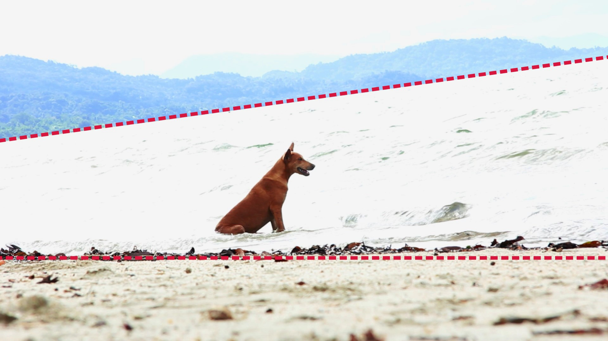
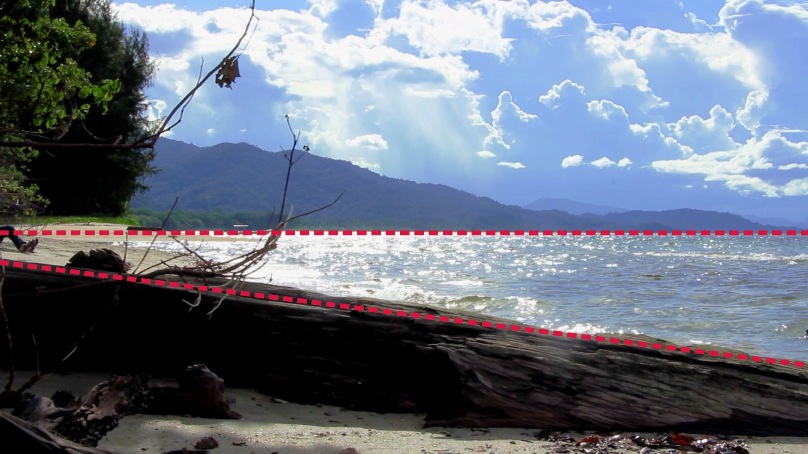
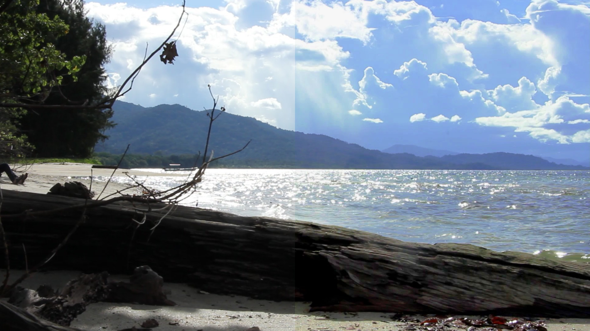

A Happy Dog on a Papuan Beach
On a beach several hours from Nabire, Central Papua, a dog soaks up the sun and cool water of Cenderawasih Bay. If you listen to the second shot, you will also hear another of our inane conversations, roughly going as follows:
Lelly: Well, if the... ocean is this clear, then I won't be afraid... of the dark. But we'll see... aah, look at that dog. He's so happy. Hello [greeting the dog].
Joaquim: According to research, Hunny Buns, the most emotionally balanced people live near the ocean.
L: Because they have enough food?
J: No, no, the ocean has a calming effect on them. [something unintelligible follows]
I don't remember what research it was that I read to back up that statement, but I can at least anecdotally attest to the effect the ocean has on this human spirit.
A note on the visuals
From a visual standpoint, these shots aren't great. The first one is overexposed, the second is fine, and the third is a good lesson in why reflectors (or lighting) are used outdoors—even when one aspect is exposed correctly, the subject winds up underexposed.
These shots are also a good lesson in perspective and shot composition. Compare the lines in the first two shots:
 In the first shot, the dog and beach are lined up nearly perfectly on a 0° line, but because the beach is sloped, the far-side shore takes on a Dutch angle. The overall result can be disorienting, or it may be unintentionally wonky if the only thing you focus on is the background.
The second shot inverts this. It aligns the far-side shore with the 0° line, and positions this line approximately in the middle of the frame, while the nearby log reflects the sloping beach. These lines wind up being more pleasing to the eyes, because the prominent half of the frame matches what we'd expect to see of an ocean and a strip of land on the other side of it, whereas the first shot would be end if we are sitting with our heads over the side of a boat, suffering bouts of sea sickness.
Finally, you might notice that the red lines also draw cones. Since the dog is looking to the right, there is some benefit to the angled far-side shore: it creates the illusion of space (and the horizon) opening up. If the lines were reversed, the implication would be that the dog was looking back at the beach, giving the shot a different, less adventurous and more claustrophobic mood.
Finally, these shots were improved for the video shown here, with some exposure compensation for the first shot and a LUT to improve the colours. A comparison on the second shot can be seen below.
The original looks quite drab in comparison! In the final result, the sky pops and the ocean is little more colourful. We are also able to see the horizon more clearly. Less impressively, though, the sand is slightly green, so a professional colourist would probably have tweaked the shot to keep the sand appropriately white.
Conclusion
This footage was shot during a WWF research trip, but I never made a documentary with it because (1) I lacked the time, and (2) it features whale sharks and I've always lacked the confidence that I'd do them justice (although the research was more about plankton than the sharks). Consequently, the files have always sat in my hard drive—like a thorn in my foot, waiting for something to be done about it—and I've always been hesitant about sharing my Papua footage.
As I gather more experience and resources, I think the time is coming that I will be able to realise this potential documentary, and bring my imagination of it to life. It will be about the "floating ghost stars of the deep" and what it means to look down at the ocean and see stars drifting past... and also plankton research!
Usage of this item elsewhere
- All of the files associated with this item can be downloaded from the Internet Archive.
- An edited version of this item is uploaded to Wikimedia Commons.
- Watch the main video on YouTube.
License & Attribution
By Joaquim Baeta. The files associated with this video are licensed under a Creative Commons Attribution 4.0 International license. You are free to distribute, remix, adapt, and build upon them in any medium or format, even for commercial purposes, provided you give appropriate credit to Joaquim Baeta.
Example attribution: "A Happy Dog on a Papuan Beach" by Joaquim Baeta, https://scenoptica.com/footage/a-happy-dog-on-a-papuan-beach.html, CC BY.